Teorija
Elastika po Hirschu
Naravna elastika je polimer 2-metil-1,3-butandiena (isoprena) z dolgimi verižnimi členi.
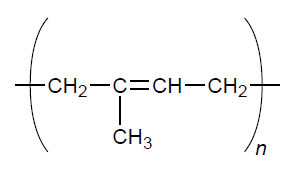
Sintetične elastike so linearni polimeri s podobnimi strukturami. Raztegljivost elastike je posledica različnih stopenj reda teh verig v raztegnjenem in neraztegnjenem stanju.
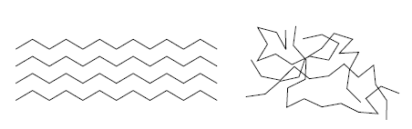
Raztegnjena elastika ima večji red, posledično nižjo entropijo in obratno. Tukaj lahko razberemo, da je sprememba entropije negativna za raztegovanje in obratno. Če jo torej raztegnemo, odda toploto in obratno; ob segrevanju se skrči in ob ohlajanju razširi. Iz tega vsega lahko opazimo (J. B. Brown), da je koefcient linearnega raztezka α negativen:
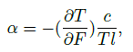
kjer je F sila, T temperatura, c specična toplota in l dolžina. To se da izpeljati s katerokoli standardno metodo za tekožino, samo da -F igra vlogo tlaka in l vlogo volumna.
Teorija potopljene elastike po Elliotu in Lippmannu
Naslednji del je dan le kot zanimivost, ker ni na nivoju tega letnika.
Sprememba notranje energije ob raztezku
Ob predpostavki reverzibilnosti (raztezki pod mero kristalizacije) lahko za male raztezke lastnosti gume opišemo s temperaturo T, dolžino l in hidrostatskim tlakom p. Hidrostatski tlak vpeljemo, da lahko naredimo volumen elastike neodvisen od raztezka in temperature. Torej so odvisnosti naslednje:
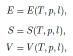
kjer je E notranja energija, S entropija in V seveda volumen. Iz prvega zakona termodinamike sledi
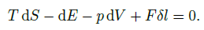
Tukaj opazimo, da je tudi sila funkcija temperature, tlaka in dolžine gumice. Z razširitvijo odvisnosti in substitucijo v 1. zakon TD dobimo
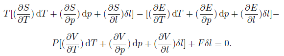
Temperatura, tlak in dolžina so neodvisne spremenljivke, zato jih lahko izberemo neodvisno drug od druge.
1. dp=δl=0
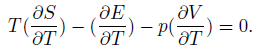
2. dT=δl=0
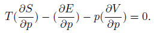
3. dp=δt=0
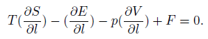
Ko to rešimo za entropijo, dobimo
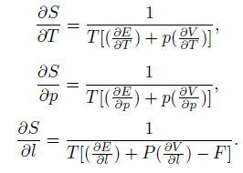
Z matematično identiteto lahko izpeljemo
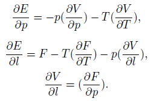
Če parcialno diferenciramo energijo po dolžini, dobimo
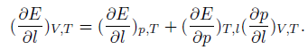
Ta relacija ne vsebuje eksperimentalno opaženih količin. Podobno
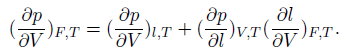
Najdimo še parcialni odvod tlaka po dolžini:
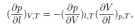
torej
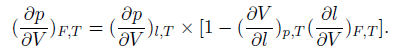
Z uporabo prejšnjih enačb pridobimo
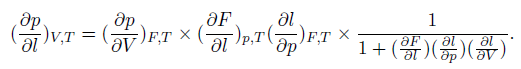
Te zadnje parcialne odvode lahko zamenjamo z bolj poznanimi:
1. koeficient raztezka k
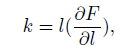
2. Youngov koeficient Y
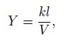
3. stisljivost K
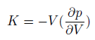
4. ena tretjina koeficienta linearnega volumskega raztezka β1
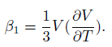
Kmalu dobimo iskano odvisnost:
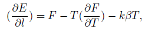
za male odmike.
Enačba stanja za majhne raztezke
Če uporabimo volumen, dolžino in temperaturo za neodvisne spremenljivke, dobimo namesto prejšnjega zaključka
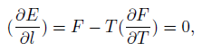
torej
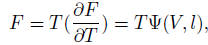
kjer je Ψ nedoločena funkcija volumna in dolžine. Ta zadnja enačba nam da enačbo stanja gume pri malih raztezkih.